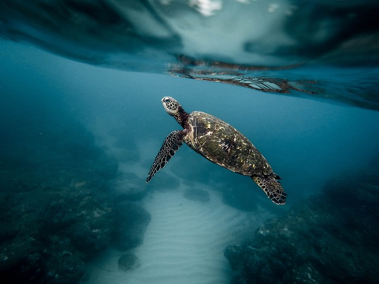
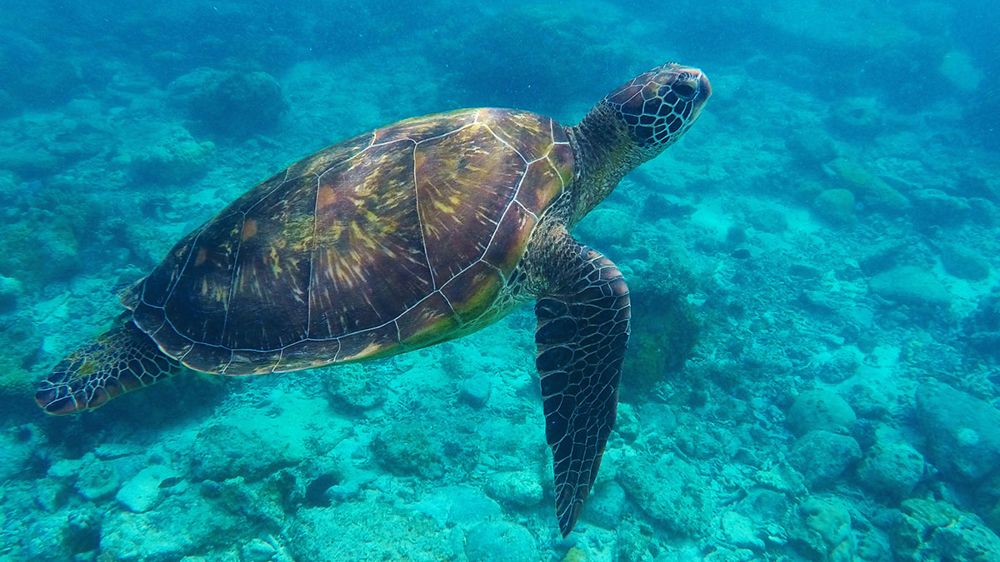

Turtles in the world
Turtles can rarely be seen on the landside because the sea is their habitat and only the female turtles come ashore and that too only in the night and early in the morning. But Land turtles are seen frequently.
There are 250 species of turtles we can find on Earth. Seven of these live in the ocean and are called sea turtles. The other remaining 243 species live on land or in freshwater ponds and marshlands. The terrestrial turtles, those who simply live on land are called tortoises.
What turtles can find in Sri Lanka?

Sri Lanka is one of those countries in the world that could boast of having 3 major types of Chelonians, freshwater terrapins, land tortoises, and marine turtles. Five of the seven species that live in the ocean, which are called sea turtles, usually visit the shores of Sri Lanka to breed.
The sea turtles are called “Kesbawa” in Sinhala and “Amai” in Tamil in Sri Lanka. There are three turtle species of freshwater turtles and one terrestrial you can find in Sri Lanka. The shells of the turtles and tortoises are dissimilar. The carapace or top part of the shell of the turtle turtles are streamlined and short making them swim easily. The leathery turtles have a thick leathery skin instead of a bony shell. Turtles have broad, flattened flippers whilst and the flippers of turtles make it very difficult for females to move on the beaches where they come back to the nest.
The male turtles, once they get into the sea as hatchlings they never come back ashore though the females come back to the same beaches to lay their eggs. Turtles usually take at least 20 years to mature sometimes even as much as 30 years. Mature females after mating at sea, come ashore to lay their eggs. Female turtles move as far as they can on the beach to lay their eggs to ensure that the water coming up with the tide does not reach the eggs and spoil them.
Five out of seven marine turtle species in the world occur in the waters around Sri Lanka
- Olive Ridley Turtle – Lepidochelys olivacea
- Leatherback Turtle – Dermochely coriacea
- Green Turtle – Chelonia myclas
- Hawksbill Turtle – Eretmochelys imbricate
- Loggerhead Turtle – Caretta Caretta
Freshwater turtles in Sri Lanka
- Red-eared slider – Trachemys scripta
- Flapshell turtle – Lissemys punctata
- Spotted black turtle – Melanochelys trijuga thermalis
- Parker’s black turtle –Melanochelys trijuga parkeri
Turtle Categories
Olive Ridley Sea Turtle
The Olive ridley sea turtle also known commonly as the Pacific ridley sea turtle, is a species of turtle in the family Cheloniidae.
The species is the second-smallest and most abundant of all the sea turtles found in the world.
Read moreHawksbill Sea Turtle

The hawksbill sea turtle is a critically endangered sea turtle belonging to the genus Eretmochelys.
The species has a global distribution that is largely limited to tropical and subtropical marine and estuary ecosystems.
Read moreLeatherback Sea Turtle

The leatherback sea turtle, sometimes called the lute turtle or the leathery turtle, is the largest of all living turtles.
Also the heaviest non-Crocodilian reptile, reaching lengths of up to 1.8 meters and weights of 500kg.
Read more